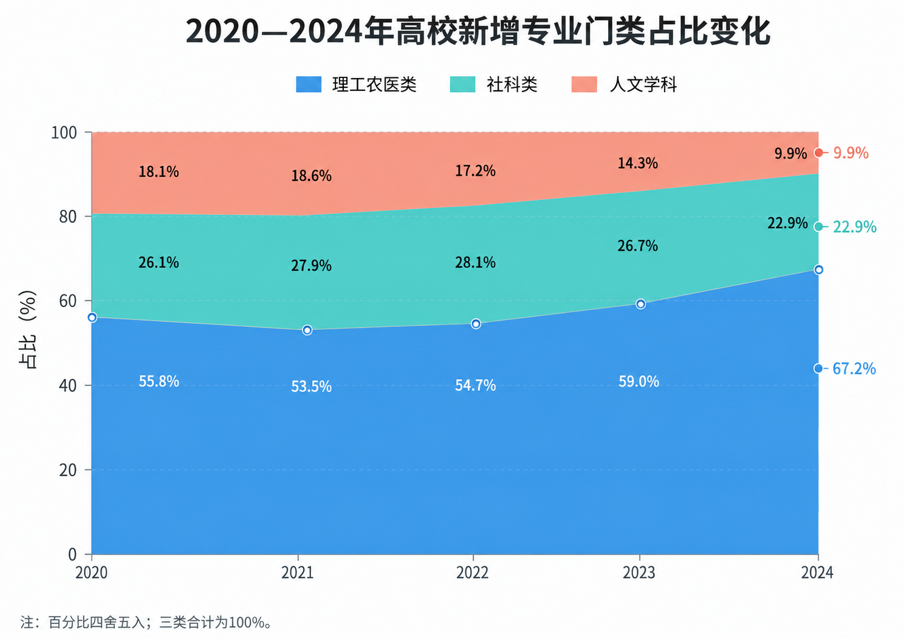
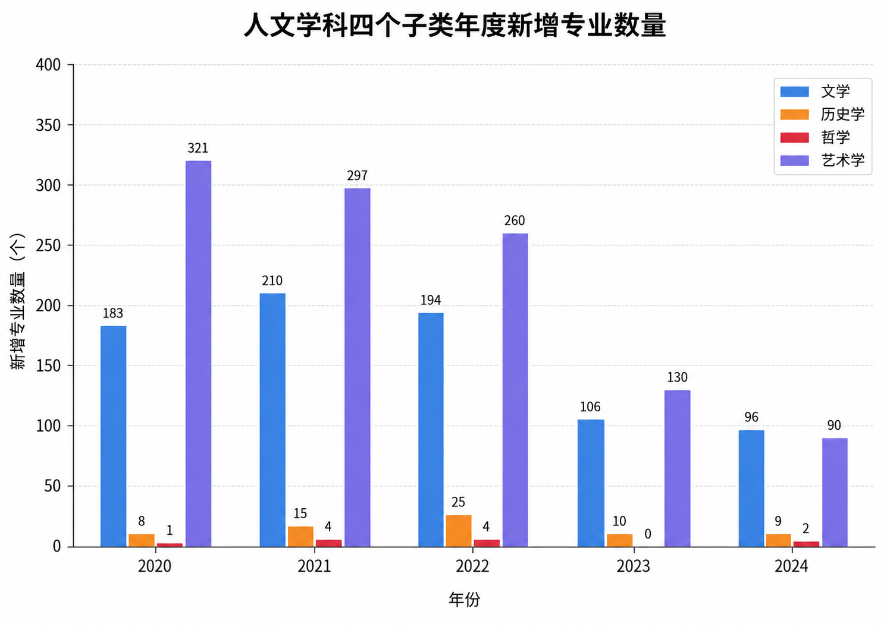
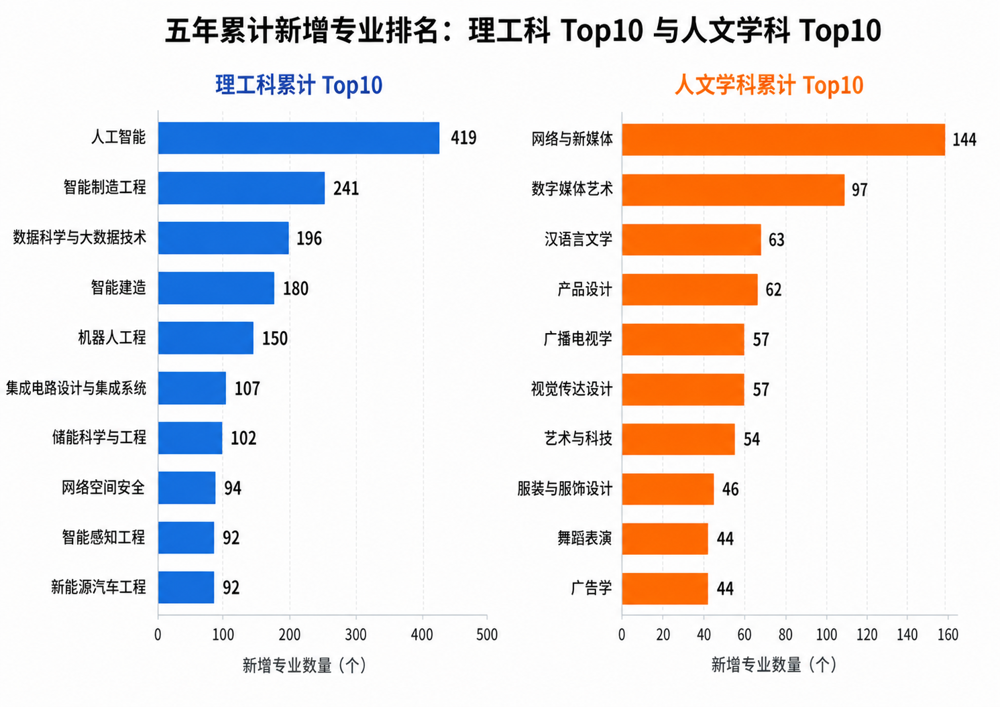
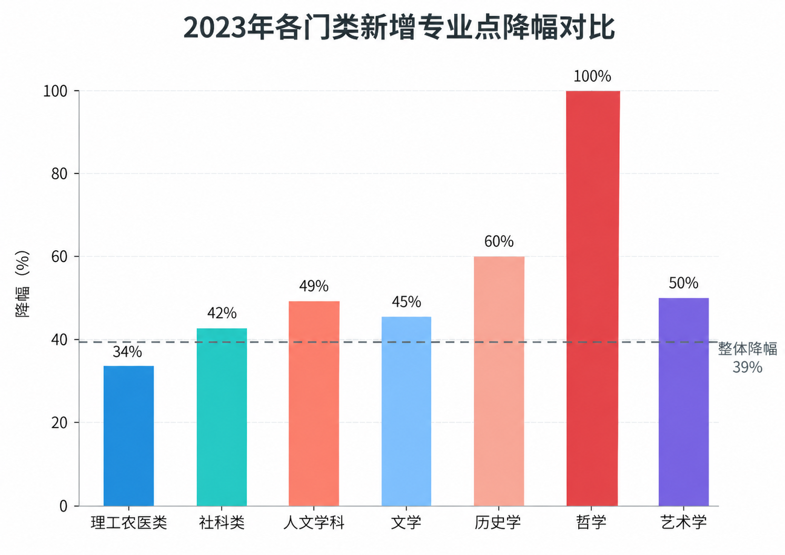
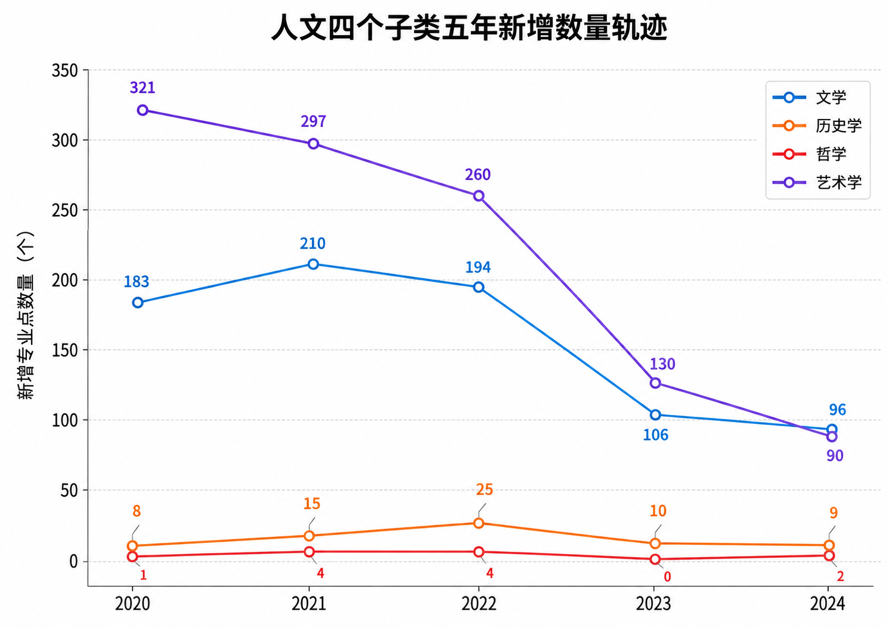
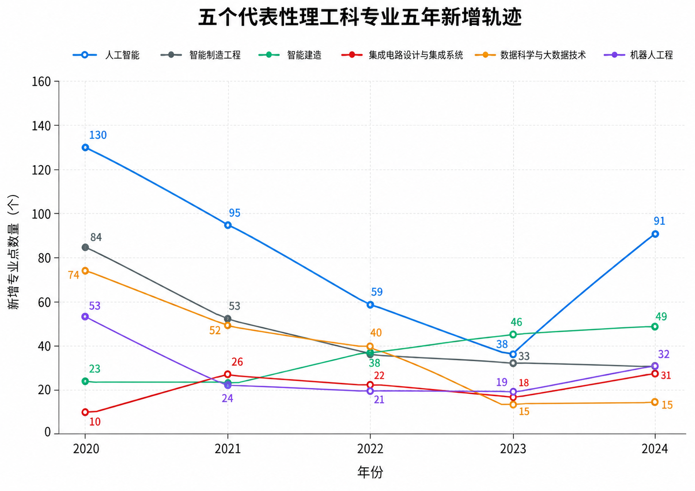
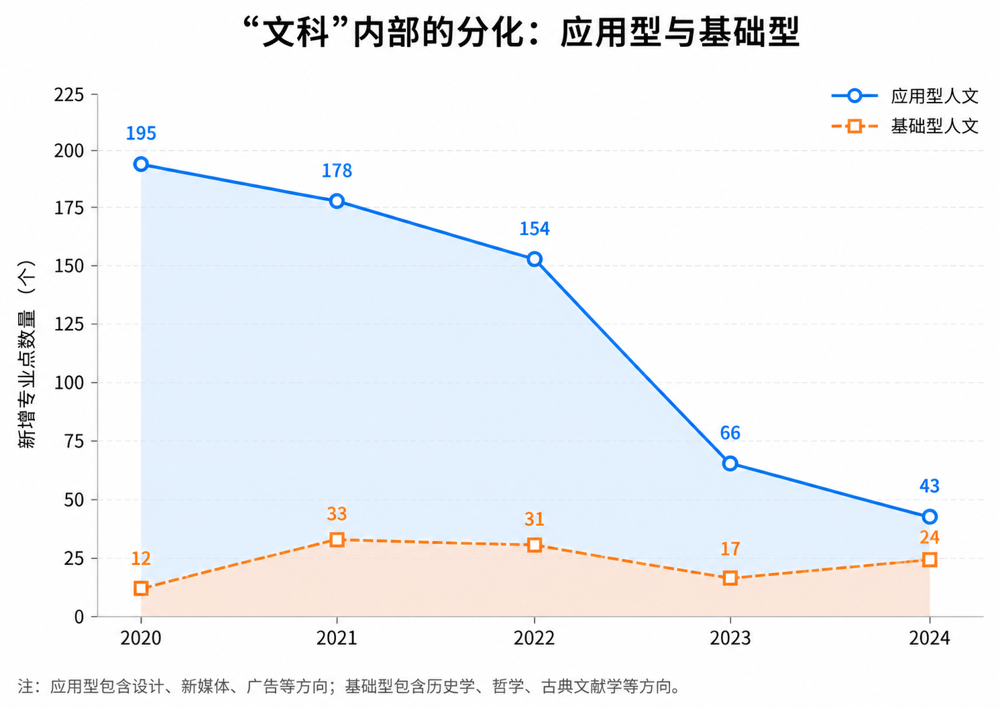

I.五年,从 3:1 到 7:1
2020 年,全国高校新增备案本科专业点 2834 个,其中理工农医类 1581 个,占 56%;文学、历史学、哲学、艺术学四类人文学科 513 个,占 18%。相当于每新增约 3 个理工科专业,对应 1 个人文专业。
到了 2024 年,新增总量降至 1996 个,但结构发生了显著偏移:理工农医 1341 个,占比升至 67%;人文仅 197 个,占比降至 10%。理工科与人文学科的新增比扩大到 6.8:1。五年间,人文的份额近乎腰斩。

2023 年是关键的转折年。这一年,教育部发布《普通高等学校学科专业设置调整优化改革方案》,要求到 2025 年优化调整高校 20% 左右的学科专业布点。当年新增总量从 2804 骤降至 1719,降幅 39%。2024 年回升至 1996,但人文学科并未同步恢复——新增量仅为 197 个,是五年最低。
II.被挤出的,主要是基础文科
将人文学科拆开来看。艺术学是体量最大的子类,也是下降最剧烈的——从 2020 年的 321 个降至 2024 年的 90 个,降幅 72%。文学从 183 个降至 96 个,降幅 48%。
历史学和哲学的绝对数量一直很低。历史学五年合计仅 67 个新增,哲学 11 个。它们没有大降,不是因为抗跌,而是因为早已低到地板——跌无可跌。2023 年,哲学从 4 个直接归零。

但另一个数据维度同样重要。五年累计新增最多的人文学科专业,第一是网络与新媒体(144 次),第二是数字媒体艺术(97 次)。这两个专业在学科分类上分别属于文学和艺术学,但课程内容高度技术化——学的是内容运营、数据分析、交互设计。也就是说,新增的文科,正在变得越来越不像传统意义上的文科。

III.2023 年的压力测试:谁最先被放弃
2023 年总量从 2804 降至 1719,整体降幅 39%。但不同学科的抗跌性差异显著。理工科降幅 34%,低于整体水平。社科降幅 42%,略高于整体。人文学科降幅 49%,远超整体。
「当政策空间收紧,基础文科是高校最先放弃的选项。」
在人文学科内部,分化更为突出:文学降 45%,艺术学降 50%,历史学降 60%,哲学降 100%——从 4 个降至 0 个。


IV.理工科内部,也在新旧交替
理工科新增总量从 1581 降至 1341,降幅不大。但内部正在进行一轮更替:智能制造工程从 2020 年的 84 个降至 2024 年的 32 个,数据科学与大数据技术从 74 个降至 15 个。早期热门工科正在降温。
与此同时,智能建造从 23 个翻倍至 49 个,集成电路设计与集成系统从 10 个增长至 31 个,机器人工程在 2023 年触底后反弹至 32 个。人工智能在经历了 2023 年的低谷(38 个)后,2024 年回升至 91 个。即使在资源最充沛的理工科内部,一个专业从热到冷,可能只需要两三年。

V.地图上的文科荒漠
2024 年,有六个省份人文学科新增为零:江苏、安徽、福建、广西、山西、江西。另有七个省份仅新增 1 至 2 个人文专业。
北京(11 个人文新增)和辽宁(5 个)是少数仍保持相对均衡的省份。北京拥有大量部属综合大学和顶尖艺术院校,辽宁则有传统的师范类和文科院校——机构的存量,决定了新增的结构。

VI."文科"这个词,正在被改写
如果我们将人文学科的新增分为应用型(设计、新媒体、广告等)和基础型(历史学、哲学、古典文献学等),两条线的走势截然不同。应用型文科从 2020 年的 195 个降至 2024 年的 43 个——降幅很大,但绝对值仍远高于基础型文科。基础型文科从 12 个到 24 个,始终是一条贴地直线。
所谓文科新增,实质上是应用型文科的新增。基础文科在整个五年数据中几乎不构成有效的统计信号。当网络与新媒体取代汉语言文学成为文科新增的主力,"文科"这个词本身的含义,正在被悄然改写。
余 论 · EPILOGUE
这组数据不提供价值判断。它不主张文科无用,也不呼吁保护文科。它只是呈现一个正在发生的事实:在过去五年的中国高校专业调整中,人文学科的新增空间被系统性压缩,且这种压缩并非均匀分布——基础文科的存在感尤其微弱,而即使是被保留下来的文科,也更多是面向就业市场的应用型专业。
从 3:1 到 7:1,数字的位移背后是方向的位移。这种位移是否合理,需要更多的讨论。但这种位移本身,值得被看到。
数据来源:教育部 2020—2024 年度《普通高等学校本科专业备案和审批结果》。
统计范围:新增备案专业点(不含审批专业及撤销专业)。覆盖全国 31 个省、自治区、直辖市高校。因数据源限制,台湾地区数据暂缺。
分析方法:本报告基于对五年间 12,166 条新增备案专业记录的整理与分类统计,学科门类划分依据教育部《普通高等学校本科专业目录》分类标准。